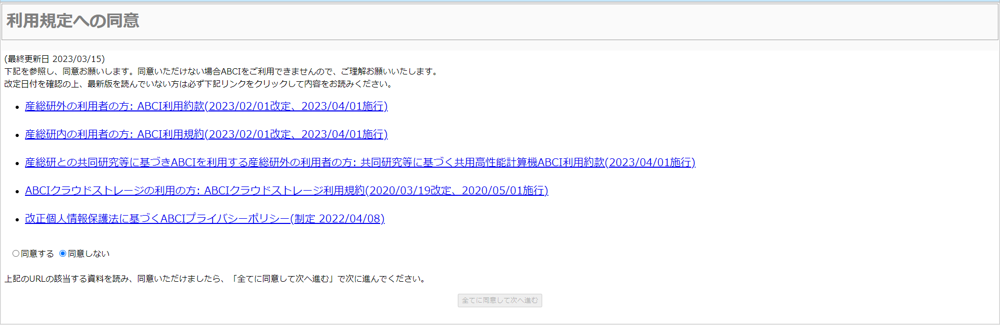
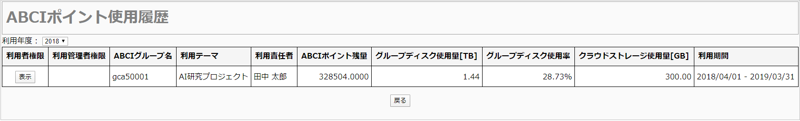
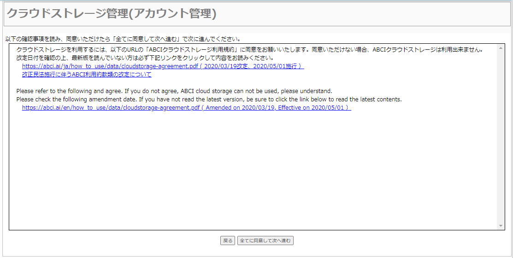

2. 利用者ポータル
本章の機能はグループの利用責任者と利用者が使用することができます。 利用責任者、及び利用管理者権限を付与された利用者は、本章の機能に加え、利用管理者権限の機能を使用することができます。
2.1. ログイン
ABCI利用ポータルにアクセスします。
ABCIアカウント名と画像中の数字6文字を入力し[次へ]をクリックします。 数字が読めない場合は[リロード]をクリックして画像を変更してください。
登録されているメールアドレス宛にログイン用のURLが通知されます。
通知されたURLからログイン画面を開いてください。
![[[Screenshot]]](../img/2_01_C.png)
ABCIアカウント名とパスワードを入力し、[ログイン]をクリックします。
2.1.1. 初回ログイン

初回ログイン時には利用規定が表示されます。
利用規定を読み、同意する場合は[全てに同意して次へ進む]をクリックします。
Note
利用規定は、下記のURLにて参照可能です。
https://abci.ai/ja/link/download_etc.html
利用規定が改定された場合には、再度確認画面が表示されることがあります。
![[[Screenshot]]](../img/2_01_G.png)
仮パスワードと新しいパスワードを入力し、[変更]をクリックすると確認ダイアログが表示されますので[OK]をクリックします。
![[[Screenshot]]](../img/2_01_H.png)
パスワード変更が完了すると、パスワード変更完了画面が表示されます。
[利用者TOPメニューへ]をクリックします。
2.2. パスワード再発行
ABCI利用ポータルにアクセスします。
ABCIアカウント名と画像中の数字6文字を入力し[次へ]をクリックします。 数字が読めない場合は[リロード]をクリックして画像を変更してください。
登録されているメールアドレス宛にログイン用のURLが通知されます。
通知されたURLからログイン画面を開いてください。
左下のリンク「パスワードをお忘れの方はこちら」をクリックします。
ABCIアカウント名と画像中の数字6文字を入力し[次へ]をクリックします。 数字が読めない場合は[リロード]をクリックして画像を変更してください。
![[[Screenshot]]](../img/2_01_E.png)
登録されているメールアドレス宛にログイン用のURLが通知されます。
URL通知とは別のメールで仮パスワードも通知されます。
通知されたURLからログイン画面を開き、ログインしてください。
2.3. パスワード変更
サイドメニューから[パスワード変更]をクリックします。
現在のパスワードと新しいパスワードを入力し、[変更]をクリックすると確認ダイアログが表示されますので[OK]をクリックします。
パスワードの変更が完了すると、パスワード変更完了画面が表示されます。
2.4. 公開鍵の登録
公開鍵は最大で10個登録できます。 サイドメニューから[公開鍵の登録]をクリックします。
2.4.1. 直接入力
登録方式から[直接入力]を選択します。
![[[Screenshot]]](../img/2_03_A.png)
規約に従ってテキストエリアに公開鍵を入力し、[登録]をクリックします。
Note
PuTTY形式の公開鍵は、PuTTYgenを使用してOpenSSH形式に変換して入力してください。
2.4.2. ファイルアップロード
登録方式から[ファイルアップロード]を選択します。
公開鍵ファイルを選択します。
Note
PuTTY形式の公開鍵は、サポートされていません。
2.4.3. 登録完了
[登録]をクリックすると確認ダイアログが表示されますので[OK]をクリックします。
![[[Screenshot]]](../img/2_03_C.png)
公開鍵の登録が完了すると、公開鍵登録完了画面が表示されます。
2.5. 公開鍵の参照、削除
サイドメニューから[公開鍵の参照、削除]をクリックします。
一覧から削除したい公開鍵にチェックを付け、[削除]をクリックすると確認ダイアログが表示されます。
削除する場合は[OK]をクリックします。
公開鍵の削除が完了すると、公開鍵削除完了画面が表示されます。
2.6. ノード予約一覧表示
サイドメニューから[ノード予約・キャンセル]をクリックします。
利用可能なノード予約一覧が表示されます。
2.7. ABCIポイント使用履歴
サイドメニューから、[ABCIポイント使用履歴]をクリックします。

2.7.1. 使用状況表示
一覧から参照したいグループを選択し [表示]をクリックします。
![[[Screenshot]]](../img/2_07_B.png)
選択したグループの使用状況を参照することができます。
2.7.2. 使用量詳細表示
画面上の[詳細]をクリックします。
月ごとのABCIポイント使用状況を参照することができます。
2.8. クラウドストレージ管理
サイドメニューから[クラウドストレージ管理]をクリックします。
利用可能なグループ一覧が表示されます。
2.8.1. クラウドストレージアカウント管理
グループ一覧の画面上の[CSアカウント管理]をクリックします。
![[[Screenshot]]](../img/2_08_B.png)
選択した ABCI グループに対応したクラウドストレージの管理画面が表示されます。
2.8.1.1. クラウドストレージアカウント追加
クラウドストレージアカウント管理画面上の[CSアカウント追加]をクリックします。

確認事項を読み、同意する場合は[全てに同意して次へ進む]をクリックします。
Note
利用規定は、下記のURLにて参照可能です。
https://abci.ai/ja/link/download_etc.html
クラウドストレージアカウントの追加が完了すると、クラウドストレージアカウント追加完了画面が表示されます。 [CSアカウント一覧へ]をクリックし、クラウドストレージアカウント一覧画面に戻ります。
2.8.2 アクセスキーの管理
クラウドストレージアカウントが作成されると、操作列に [アクセスキー管理] ボタンが表示されます。
クラウドストレージアカウント管理画面上の[アクセスキー管理]をクリックします。
この画面から、アクセスキーの新規作成、削除、および、再発行の操作を行います。
2.8.2.1. アクセスキー新規発行
アクセスキー管理画面上の[アクセスキーの新規発行]をクリックすると確認ダイアログが表示されますので[OK]をクリックします。
アクセスキーの新規発行が完了すると、アクセスキーの新規発行完了画面が表示されます。 [アクセスキー管理へ]をクリックします。
2.8.2.2 アクセスキー削除
アクセスキー管理画面上の削除したいアクセスキーIDの[削除]をクリックすると確認ダイアログが表示されますので[OK]をクリックします。
アクセスキーの削除が完了すると、アクセスキー管理画面が表示されます。
2.8.2.3. アクセスキー再発行
アクセスキー管理画面上の再発行したいアクセスキーIDの[再発行]をクリックすると確認ダイアログが表示されますので[OK]をクリックします。
[アクセスキー管理へ]をクリックします。
アクセスキー管理画面が表示されます。